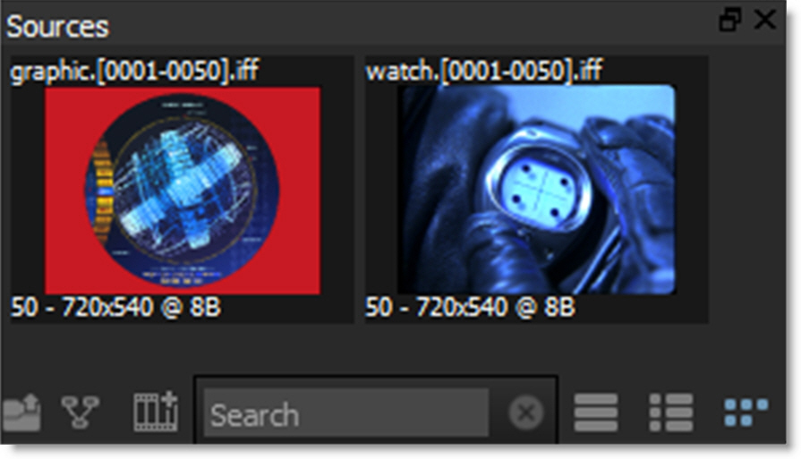
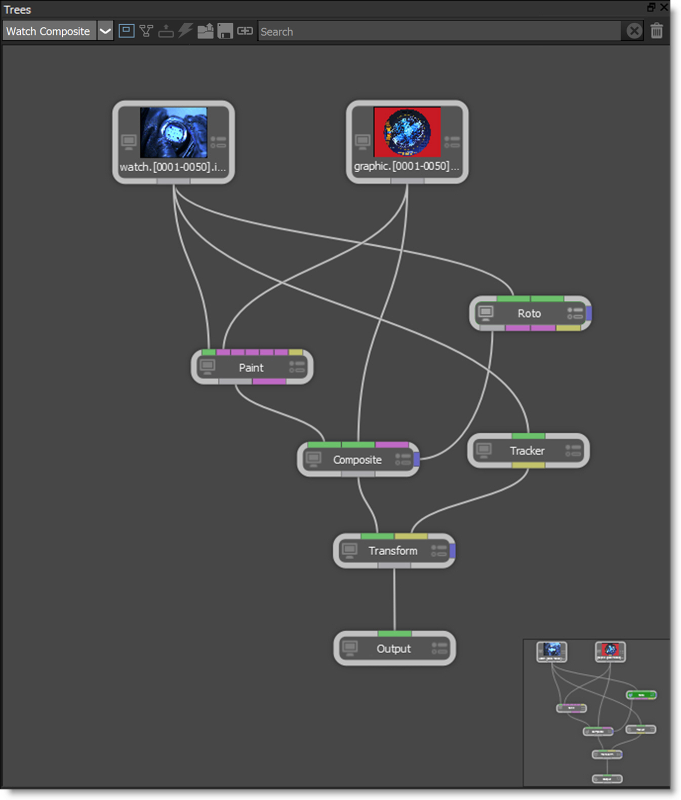
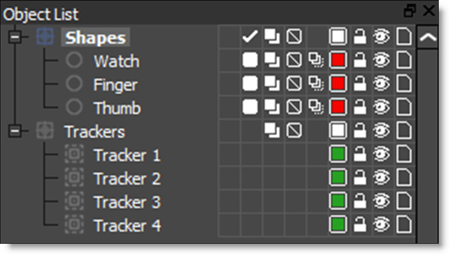

Concepts
Projects
A project contains sessions, trees, nodes and source media.
Sessions
A session in Silhouette is where you composite, rotoscope and paint. It describes the resolution, bit depth, duration, frame rate and aspect ratio as well as what nodes you will be using. More on nodes below. Typically, you may have a job that requires you to work on multiple shots. A session would be created for each shot that you will work on. You can have as many sessions as you want, but can only work on one session at a time.
Sources
Sources are sequential images--clips. The location, frame rate, raster type, image size, and other information about the sources is stored for your reference.
Trees
Trees are the combination of sources and nodes that are used to create the desired effect.
Nodes
Individual nodes that perform image processing functions are connected together to form a tree.
Objects
Objects are items such as shapes, layers, and trackers that are used by different nodes.